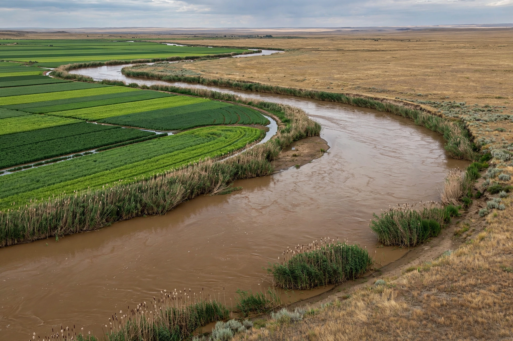

[Image placeholder: The Syr Darya flowing through the Kazakh steppe]The **Syr Darya** is a river in Central Asia, known to the ancient Greeks as the Jaxartes. Formed in the Tian Shan mountains of Kyrgyzstan by the confluence of the Naryn and Kara Darya, it flows west and northwest for about 2,200 km (over 3,000 km counting the Naryn) through Uzbekistan, Tajikistan's Fergana Valley and Kazakhstan to the North Aral Sea.
The Jaxartes marked antiquity's frontier between settled Persia and the steppe nomads; Alexander the Great founded Alexandria Eschate (modern Khujand) on its banks after his victory at the Jaxartes in 329 BC. The Syr Darya waters the Fergana Valley, Central Asia's most densely populated farmland, and the Kyzylorda rice lands. Its flow is governed by upstream Kyrgyz dams (Toktogul, on the Naryn) whose winter hydropower releases conflict with downstream summer irrigation needs — the region's signature water dispute. Reduced flows after Soviet irrigation expansion helped shrink the Aral Sea, but Kazakhstan's Kokaral dam has channelled Syr Darya water into reviving the North Aral since 2005.
From the Fergana Valley the river passes Bekobod, Shardara reservoir, Kyzylorda and Kazaly before reaching its delta at the North Aral near Aralsk. Its basin supports over 20 million people across four states.